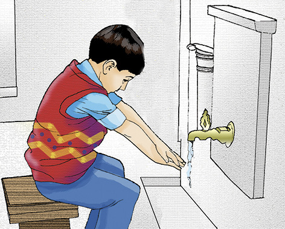
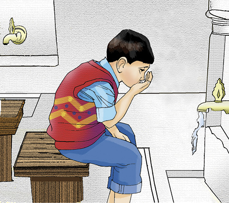
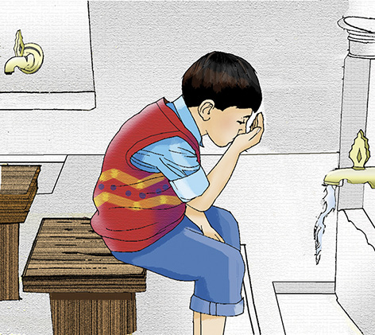
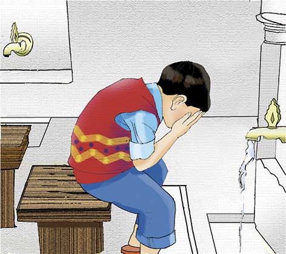
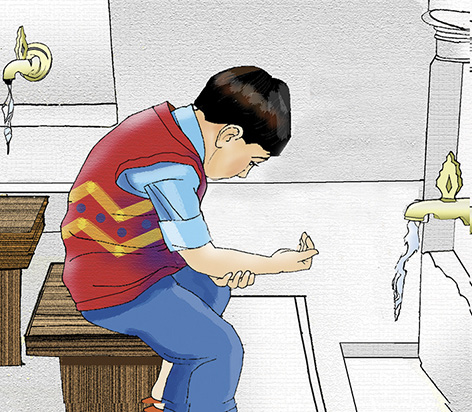
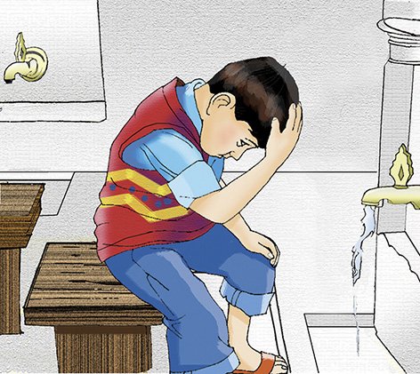
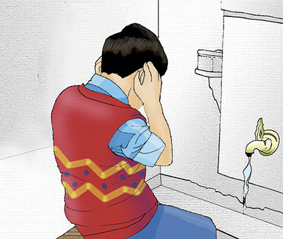
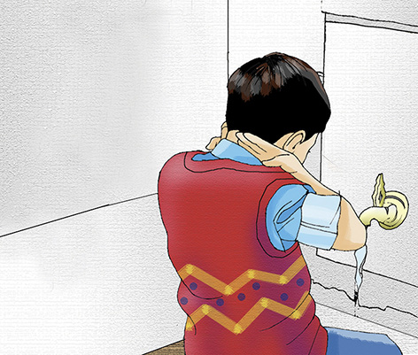
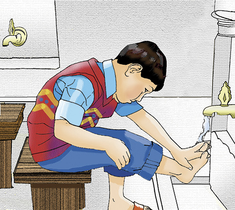

2. BÖLÜM
EF’ÂL-İ MÜKELLEFÎN
VE TEMİZLİK
Temizlik imanın yarısıdır.
Hadis-i Şerif
Ef’âl-i Mükellefîn
İslâm dini akıllı ve bâliğ (ergin) olan Müslüman erkek ve kadınlardan bazı hususları (emirleri) yapmalarını bazılarından da (yasaklarından da) kaçınmalarını istemiştir. Bu emir ve yasaklara “teklif”, emir ve yasakların muhatabı Müslümanlara da ”mükellef” denir. Mükelleflerin işlemeleri veya işlememeleri gereken şeylere ise “ef’âl-i mükellefîn” denir.
Mükellefiyet Ne Zaman Başlar?
Kişinin dinî hükümlerden sorumlu tutulabilmesi için,
a. Akıllı
b. Ergin olması şarttır.
Din, akıl ve şuur sahiplerini muhatap alır onları kendi irade ve seçenekleriyle, dünyevî-uhrevî hayra yönlendirir; icabet edenlere de ebedî saadetler vaat eder.
Bu itibarla mükellefiyetin birinci şartı âkıl olmaktır. Âkıl, ne yaptığını bilen, iyi ile kötüyü birbirinden ayırt etme kabiliyetine sâhip olan kimse demektir.
Mükellefiyetin bir diğer şartı da, kişinin baliğ olması yani, bülûğa ermiş bulunmasıdır.
Bülûğa Ermek Ne Demektir?
Bülûğa ermek, insanların çocukluktan çıkıp cinsî duygu ve hislerinin başladığı çağa ermeleri demektir.
Bülûğ Çağı Ne Zamandır? Nasıl Bilinir?
Bülûğ çağı, İslâm âlimlerinin çoğunluğuna göre kızlarda 9-15; erkeklerde 12-15 yaşları arası olarak belirlenmiştir.
Kişinin bülûğa ermesi erkeklerde ihtilâm denilen cinsî boşalmanın olması; kızlarda ise hayız ve aybaşı adı verilen muayyen hâlin ortaya çıkması ile gerçekleşir. Buna “tabiî bülûğ” denir. Bazen olur ki, erkek ve kız, yaş olarak bülûğ çağına girdikleri halde, kendilerinde ihtilâm ve ay hâli görülmez. Böyleleri için “hükmî bülûğ” vardır ki bu, belli bir yaş sınırına ulaşanların fiilen bülûğa ermiş olmasalar bile bâliğ olarak kabul edilmeleridir.
Hükmî bülûğ yaşı, hem erkek hem de kızlar için 15 yaştır.
Bülûğla birlikte kişinin yeterli aklî yetişkinlik kazandığı var sayıldığı için aksini gösteren bir delil olmadıkça kişi mükellef olur. Dinî terminolojide buna “âkil ve bâliğ olmak” denir. Bunun anlamı kişinin hakları kullanmaya, sözlü, yazılı, fiilî hukukî işlemleri bizzat yapmaya, dinî ve içtimaî mükellefiyetlere muhatap olmaya ve cezaî sorumluluk taşımaya ehil hale gelmesidir.
Mükelleflerin Yapmaları Gereken Dinî Vazifeler Nelerdir?
Mükellefiyet çağına giren her Müslüman’ın yapmak zorunda olduğu bazı dinî vazifeler vardır ki, bunlara fıkıh ve ilmihal kitaplarında “mükelleflerin yapacağı vazifeler” manasına “Ef’âl-i Mükellefîn” denir.
Bunlar farz, vâcip, sünnet, müstehab, mübah, mekruh, müfsid ve haram olmak üzere sekize ayrılır.
1. Farz: Kat’î (kesin) delil ile sabit olan hükümlerdir ve iki kısımdır:
a) Farz-ı ayn: Mükellef her Müslümanın ancak kendisinin yapması ile yerine gelen amellerdir. Beş vakit namaz ve oruç gibi.
b) Farz-ı kifâye: Bazı Müslümanların yapmaları ile diğer Müslümanlardan mesûliyet kalkan farzlardır. Cenâze namazı ve selâm almak gibi. Eğer böyle bir farzı Müslümanlardan hiçbirisi yapmazsa hepsi mes’ûl olurlar.
2. Vâcip: Farz derecesinde kat’î olmayan delille sabit hükümlerdir. Vitir ve bayram namazları gibi.
3. Sünnet: Peygamberimizin sözü, işi ve başkası yaptığında hoş gördüğü şeylerdir. Sünnet ikiye ayrılır:
a) Sünnet-i müekkede: Peygamberimizin devamlı olarak yapıp, pek az terk ettiği sünnetlerdir. Sabah ve öğle namazının sünnetleri gibi. Ezan, ikâmet, cemaate devam gibi İslâm prensiplerinden sayılan sünnetler de, sünnet-i müekkededir. Bunlara sünnet-i Hüdâ da denir.
b) Sünnet-i gayr-i müekkede: Peygamberimizin ibâdet maksadıyla bazen işleyip bazen de terk ettikleri sünnettir. İkindi namazının sünneti ile yatsı namazının ilk sünneti gibi. Peygamber efendimizin yiyip içme, giyinip kuşanma, oturup kalkma gibi günlük normal davranışları ve âdâb-ı muaşerete taallûk eden işleri de sünnet-i gayr-ı müekkedeye dahildir. Bunlara sünnet-i zevâid adı da verilmiştir.
4. Müstehab: Peygamberimizin bazen işledikleri şeylerdir. Sadaka vermek ve nâfile oruç tutmak gibi.
5. Mübah: İşlenmesinde sevap, terk edilmesinde günah olmayan şeylerdir. Oturmak, kalkmak, yemek, içmek gibi.
6. Mekruh: işlenmesi hoş görülmeyen ve amelin sevâbını eksilten şeylerdir. Namaz içinde etrafa bakmak gibi.
Mekrûh iki kısma ayrılır:
a) Tahrîmen Mekrûh: Harama yakın olan mekrûha denir. Abdest alırken suyu israf derecede harcamak gibi.
Tahrîmen mekrûhun terkinde sevap vardır. İşlenmesinde ise, âhirette azâba uğrama ihtimali mevcuttur.
b) Tenzîhen Mekrûh: Helâla yakın olan mekruhtur. Burnu sağ el ile temizlemek gibi.
Tenzîhen mekrûhun işlenmesi ise, azâbı gerektirmez. Fakat terk edilmesi durumunda sevap kazanılır. Mekruhları helâl telâkki etmek, hata olmakla beraber, insanı dinden çıkarmaz.
7. Müfsid: Başlanmış bulunan bir ibâdeti bozan şeylerdir. Abdestli iken bir yerinden kan veya irin çıkmak, namazda gülmek ve oruçlu iken bir şey yemek gibi.
8. Haram: İşlenmesi kat’i delille yasak edilen şeylerdir. Alkollü içki içmek, anaya-babaya âsi olmak gibi.
Namaza Hazırlanıyorum...
Abdest
İslâm dini temizliğe çok önem verir. İbadet ederken de temiz olmak, kirlerden arınmak öncelikli şartlardandır. Dinimizin direği olan namaz ibadetini ifa ederken her Müslüman’ın abdestli olması gerekir. Biz, nasıl abdest alınacağını Peygamber Efendimizin (sallallâhu aleyhi ve sellem) uygulamalarından biliyoruz.
Abdest almadan önce tuvalet ihtiyacı olabilir. Bu hususla ilgili olarak “istibra”, “istinka” ve “istinca” kavramları üzerinde durmamız gerekir.
İstinca: Büyük ve küçük abdestlerden sonra pisliğin çıktığı yerin temizlenmesidir.
İstinka: İstincada mubâlağa yapmaktır ki, bu da önce münasip kuru bir şeyle silmek, sonra su ile yıkamak sonra da kurulamakla olur.
İstibra: Erkeklerin küçük abdestten sonra tenasül uzvunda idrar kalmaması için özen göstermesidir. Bunun da en güzel şekli sıvazlamadan sonra, öksürmek veya bir miktar yürümek sûretiyle olabilir.
Abdestimizin kabul olması için mutlaka yerine getirmemiz gereken bazı şartlar vardır. Bunlara abdestin farzları diyoruz.
Abdestin Farzları
1. Yüzü bir kere yıkamak
2. Elleri ve kolları dirseklerle beraber bir kere yıkamak
3. Başın dörtte birini mesh etmek
4. Ayakları topuklarla beraber bir kere yıkamak.
Abdestimizin kabul olması için bu işlemleri yapmak şarttır. Ancak sadece bunların yerine getirilmesi ile Peygamber Efendimiz’in (sallallâhu aleyhi ve sellem) abdesti gibi bir abdest almış olmayız. Abdestin sünnetlerini yerine getirdiğimizde Peygamber Efendimiz gibi abdest almış oluruz.
Abdestin Sünnetleri
1. Abdeste başlarken eûzü-besmele çekmek
2. Abdeste niyet etmek
3. Misvak kullanmak veya dişleri parmakla ovalamak
4. Ağza burna üçer defa su vermek (mazmaza ve istinşak)
5. Her organı üçer defa yıkamak
6. Abdeste ara vermeden devam etmek
7. Sırayı bozmamak
8. Kulakları, boynu mesh etmek
9. Başın tamamını mesh etmek (kaplama mesh)
10. Ayakları yıkarken parmaklardan başlamak.
Abdest Alıyorum

Ellerin Yıkanması
Eller bileklere kadar yıkanır.
Özellikle parmak araları ovulur (hilâllenir).
Kuru kalmamasına dikkat edilir.

Ağza Su Verilmesi
Sağ elle ağza üç defa su verilir.
Her defasında ağız çalkalanarak su dökülür.

Burna Su Verilmesi
Sağ elle burna üç defa su verilir.
Her defasında su hafifçe burna çekilir.
Sol elle sümkürülerek burun temizlenir.

Yüzün Yıkanması
İki avuç birleştirilir ve su ile
doldurulduktan sonra üç defa yüz yıkanır.
Yüzün, alında saç bitiminden çene altına ve
kulaklara kadar olan kısmı,
her defasında yıkanır.

Kolların Yıkanması
Dirseklerle beraber evvelâ sağ kol,
sonra sol kol üçer defa yıkanır.

Başın Meshedilmesi
Sağ el ıslatılır ve başın dörtte biri meshedilir.

Kulakların Meshedilmesi
İki el ıslatılıp serçe parmaklarla kulakların içi,
baş parmaklarla da dışı bir defa meshedilir.

Boynun Meshedilmesi
Ellerin tersiyle boyun mesh edilir.

Ayakların Yıkanması
Önce sağ sonra sol ayak, sol elin yardımıyla
topuk kemikleri de dahil olmak üzere yıkanır.
Ayaklar yıkanırken, parmakların aralarının da
ıslanması sağlanmalıdır.
Abdesti Bozan Hâller
Başımıza gelen bazı durumlarda abdestimiz bozulur. Bu durumlar şunlardır.
1. Önden veya arkadan bir şey çıkması (büyük veya küçük abdest yapmak, yellenmek vs.).
2. Vücuttan kan, irin, sarı su çıkması.
3. Ağız dolusu kusmak.
4. Bayılmak.
5. Uzanarak uyumak.
6. Sarhoş olmak.
7. Ağızdan tükürüğün rengini değiştirecek kadar kan gelmesi.
8. Namaz kılarken yanındakilerin duyabileceği kadar yüksek sesle gülmek.
Abdesti Bozmayan Hâller
Aşağıdaki durumlarda abdest bozulmaz:
1. Dişlerden çıkan kan, tükürüğün rengini değiştirmeyecek kadar azsa abdesti bozmaz.
2. Ağlamak.
3. Çıktığı yerin etrafına yayılmayan kan.
4. Tıraş olmak, tırnak kesmek.
5. Namazda tebessüm etmek.
Özürlünün Abdesti
Dinimizde ibadet hayatı dahil her konuda kolaylığın sağlanması, zorluk ve sıkıntının giderilmesi temel bir esastır. Normal hallerde abdesti bozan şeyler konusunda özürlü kimseler için hususî hükümler getirilerek bu kimselerin ibadet etmesine ruhsat tanınmıştır.
Abdesti bozan ve kısmen süreklilik taşıyan bedenî rahatsızlıklara özür, böyle kimselere de “özür sahibi” denir. Devamlı burun kanaması, idrar tutamama, yaranın sürekli kanaması, hanımların akıntısı gibi... durumlar özürdür. En az bir namaz vakti süresince devam eden bedenî rahatsızlıklar özür hali sayılır. Özürlü kişi her namaz vakti için ayrı bir abdest alır, aldığı bu abdestle o vakit içinde dilediği kadar namaz kılabilir. Namaz vakti çıktığında özürlü kimsenin abdesti bozulur, yeni namaz vaktinde tekrar abdest alması gerekir. Özürlü kimse, özürlü olmayan kimselere imam olamaz.
Sargı ve Mest Üzerine Mesh
Dinimiz, ibadetlerin yerine getirilmesinde birçok kolaylıklar sunmuştur. Bunlardan biri de, sargı veya yara üzerine mesh edebilme kolaylığıdır.
Mesh bir şeyin üzerini elle silmek demektir. Başın, ayaklara giyilen mestin veya sargının üzerine, elin ıslaklığı ile dokunmaya da mesh denir.
Sargı Üzerine Mesh
Bir uzvun çıkması, kırılması veya yaralanması halinde üzerine sargı yahut alçı sarılsa, o uzvu yıkamak mahzurlu ise sargının çoğu üzerine meshedilir. Hatta mesh etmek de zararlı ise ondan da vazgeçilebilir. Sargının çoğunluğunu sadece bir defa meshetmek yeterlidir. Sargının abdestsiz veya cünüpken sarılmış olması meshe engel olmadığı gibi bu meshin süresi de yoktur. Özür devam ettikçe meshedilmeye devam edilir. Abdestli olarak sarılması şart değildir. Meshedildikten sonra sargı açılsa veya düşse, yahut mevcut sargı üzerine ikinci bir sargı bağlansa, meshi yenilemek icap etmez.
Mest Üzerine Mesh
İslâm’da mestler ya da mest şartlarına uygun çorap, ayakkabı, çizme gibi şeylerin üzerine mesh etmek caizdir. Allah Resûlü’nün mest üzerine mesh ettiği bilinmektedir.
Mestte aranan birtakım şartlar vardır bunlar;
1. Mestler, ayakları topuk kemikleriyle beraber örtecek şekilde olmalıdır.
2. Giyilen mest, bir fersah (yaklaşık 6 km) yürüyecek kadar dayanıklı olmalıdır.
3. Mestler bağcıksız olarak ayakta durabilmelidir.
4. Mest, deriye suyu geçirmemelidir.
5. Mestin topuktan aşağı kısmında, ayağın küçük parmağının üç misli büyüklüğünde yırtık olmamalıdır.
Abdest alırken mestin üzerine elin en az üç parmağı kadar yerin elin ıslaklığı ile bir defa meshedilmesi gerekir. Bunun için mestin abdestli olarak giyilmiş olması gerekir.
Mest üzerine meshin süresi 24 saat (bir gün), yolculuk durumunda ise 72 saattir (üç gündür). Bu müddetin başlangıcı, mestler giyildikten sonra ilk abdestin bozulma zamanından itibarendir. Örnek verilirse, bir kimse abdestini aldıktan sonra o taharet üzerine mestlerini giyse de, beş saat sonra ondan abdesti bozucu bir hal meydana gelse, bu beşinci saatten itibaren meshin müddeti yolcu olmayan için yirmi dört saat ve yolcu için yetmiş iki saat devam eder. Mestleri giyiş zamanına bakılmaz.
Gusül
Guslün, vücutta yeni bir denge kurma, kan dolaşımını düzene koyma ve kişiyi ibadete hazırlama gibi beden ve ruh sağlığı açısından birçok yararı vardır.
Boy Abdesti (Gusül): Tepeden tırnağa bütün vücudu yıkamak demektir. Bu işleme boy abdesti de denilir. Gusül bazen farz, bazen sünnet, bazen de müstehaptır.
Guslü Gerektiren Durumlar
1- Cünüplük
Cünüplük, cinsi münasebet veya şehvetle meninin gelmesi sebebiyle meydana gelen ve belirli ibadetlerin yapılmasına mani olan durumdur.
İnsanın cinsiyet organından gelen üç çeşit akıntı vardır. Bunlar mezi, vedi ve menidir.
Mezî; cinsel oynaşma, hayal etme ve şakalaşma sonunda duyulan haz sebebiyle cinsel organdan gelen, ince, şeffaf ve kaygan sıvıdır. Geldiğinin farkına varılmayabilir. Erkekte de kadında da olur.
Vedî; soğuk, ağır kaldırma vs. sebebiyle genellikle idrardan sonra gelen, koyu, kesik kesik ve renk olarak meniye benzeyen maddedir. Bazen cinsel zevk duyma sebebiyle de gelebilir.
Menî; Şehvetle gelip, genelde hızla dışarı çıkan ve kendine has kokusu ve rengi olan bir sıvıdır.
Gusül sadece meniden dolayı gerekir. Mezi ve vedinin gelmesiyle sadece abdest bozulur, geldiği yer yıkanır ve abdest alınır.
Meni gelsin veya gelmesin, cinsi münasebet sonunda kadın da erkek de cünüp olur. Meninin uyku halinde veya uyanıkken, iradî veyahut da gayrî iradî gelmesi neticeyi değiştirmez. Cünüplük için meninin şehvetle gelmesi şarttır. Ağırlık kaldırma, düşme, hastalık gibi sebeplerle meninin gelmesi cünüplük sebebi değildir.
Uyandığında ihtilam olduğunu hatırlamamakla birlikte, çamaşırında meni bulaşığı gören kimsenin gusletmesi gerekir. İhtilam olduğunu hatırladığı halde elbisesinde böyle bir iz görmeyen kimsenin ise gusletmesi gerekmez.
Gusül alırken yarıda abdest bozulursa, gusül bozulur mu?
Gusül abdesti alırken insanın bir yerinin kanaması veya umumi olarak namaz abdestini bozan hallerin zuhur etmesi durumunda bunun gusle herhangi bir manisi yoktur. Ancak böyle bir gusülle ayrıca abdest almadan ibadet etmek mümkün değildir. Guslü gerektiren haller bellidir. Bunlar zuhur etmeden gusle zarar gelmez. Ancak gusül esnasında tazyik olmadan meni veya mezi gelmesi durumunda ihtiyaten gusle yeniden başlamak daha doğrudur.
2- Hayız ve Nifas
Hayız (âdet görme, âdet kanaması, aybaşı hali) ve nifas (lohusalık) kanlarının kesilmesi ile veya bu iki durum için öngörülen azami sürelerin bitmesiyle gusül gerekir. Bu süreyi aşan kanamalar özür hali (istihaze) sayıldığından bu tür kanamanın sona ermesi halinde gusül gerekmez.
Hayız ve nifas halindeki kadının hükmü cünüp kimseninki gibidir. Ayrıca bu durumdaki kadınların cinsel ilişkide bulunması haramdır, oruç tutması da caiz değildir.
Yukarıdaki sayılanlara ilave olarak Cuma ve bayram namazları öncesinde, hac veya umre niyetiyle ihrama girerken ve Arafat’ta vakfe için gusletmek sünnettir.
Cenaze yıkama, kan aldırma, Mekke ve Medine’ye girme, Berat ve Kadir gecelerini ihya, bir toplantıya katılma, yeni elbise giyme, bir günahtan tevbe etme gibi durumlarda gusletmek de müstehaptır.
Boy Abdestinin Farzları
1. Ağzı bol su ile çalkalayıp yıkamak.
2. Burna bol su verip yıkamak.
3. Bütün vücudu, hiç kuru yer bırakmadan yıkamak.
Boy abdesti şöyle alınır:
– Önce besmele çekilerek boy abdesti almaya niyet edilir.
– Eller, edep yerleri ve vücutta başka kirli yerler varsa yıkanır.
– Namaz abdesti gibi abdest alınır.
– Ağza ve burna üçer defa bol su verilir.
– Önce üç defa başa su dökülür. Sonra üç defa sağ omuza, üç defa sol omuza su dökülüp iyice ovulur ve kuru yer kalmayacak şekilde bütün vücut yıkanır.
Boy Abdesti Alırken Dikkat Edilmesi Gerekenler
– Kulak kıvrımları, göbek çukuru, koltuk altları gibi suyun ulaşması zor olan yerler iyice ovulup ıslatılmalıdır.
– Başkalarının yanında avret yerleri açılmamalıdır.
– Boy abdesti alırken konuşmamalı, duâ okumamalıdır.
– Çıplak olarak kıbleye karşı durulmamalı, avret yerlerini örterek yıkanmalıdır.
– Saçlar iyice ovuşturulup altına suyun geçmesi sağlanmalıdır.
– Boy abdesti alınan yerde su birikiyorsa, en son ayaklar yıkanmalıdır.
– Duşlarda boy abdesti alırken; başı, omuzları üç defa su dökecek miktarda su altında tutmak ve ovunmak yeterlidir.
– Boy abdesti alınınca, namaz abdesti de alınmış olur. Bu abdestle namaz kılınabilir, abdestli olarak yapılması gereken ibadetler yapılabilir.
– Abdesti bozan şeylerden biri meydana geldiğinde sadece namaz abdesti bozulur, boy abdesti bozulmaz.
Boy Abdesti Gerekenlere Haram Olan Şeyler
Kendilerine boy abdesti farz olanlara –hayız ve nifas halindeki kadınlar da aynı hükme tabidir- gusletmeden önce haram olan şeyler şunlardır:
1. Namaz kılmak, tilavet secdesi yapmak. Bir âyet olsa bile, dua niyeti ile Kur’ân okumak. Yalnız hamd ve duâ ile ilgili âyetleri, duâ ve zikir niyeti ile okumak caizdir. Cünüb veya adet halinde olan bir kadının duâ niyeti ile Fatiha Sûresini okuması caizdir.
2. Kur’ân-ı Kerim’e, bir veya yarım âyet olsa bile, el sürmek ve Mushaf-ı Şerif’i tutmak haramdır. Ancak Kur’ân’a yapıştırılmamış olan bir kılıf, bir mahfaza ve sandık içinde onu taşımak ve onu dış taraftan tutmak caizdir.
3. Kabe’yi tavaf etmek ve bir zaruret olmadığı halde bir mescide girmek veya içinden geçmek.
4. Üzerinde âyet-i kerime yazılı bulunan bir levhayı veya bir parayı el ile tutmak.
Boy Abdesti Gerekenlere Mekruh Olan Şeyler
1. Din kitaplarından herhangi birini el ile tutup okumak.
2. El ve ağzı yıkamadan yiyip içmek.
3. El ile tutmayıp yer üzerinde bulunan bir sayfaya veya bir levhaya Kur’ân’dan yazı yazmak.
Teyemmüm
Teyemmüm, abdest almak veya gusletmek için suyun bulunmaması veya kullanılamaması hâlinde, hangi maksatla teyemmüm edeceğine niyet edip ellerini toprak cinsinden bir şeye iki defa vurarak, birincide yüzünü, ikincide dirseklerine kadar ellerini mesh etmektir.
Teyemmüm, her yönden temiz olan toprak cinsinden bir şeyle yapılabilir. Pislik dokunmamış olan toprak, kum, çakıl, alçı gibi toprak cinsinden olan şeylerle teyemmüm yapılır. Yine taş cinsinden olan mermer, kiremit, tuğla, yakut, zümrüt, zebercet, çinko ve mercanla veya nemli olsun, yanık olsun toprakla veya çoğu toprak karışımı olan maddelerle, kaya tuzu ile, çamurla sıvanmış duvarla da teyemmüm edilebilir.
Teyemmümün Farzları
Teyemmümün farzı ikidir:
1. Niyet,
2. İki darp (vurmak) ve mesh.
Teyemmüm Nasıl Yapılır?
Bir Müslüman gusletmek, yahut abdest almak için su bulamazsa veya bulduğu suyu kullanmasına hastalığının şiddetlenmesi, düşman tehlikesi vesâire gibi ciddî bir mâni mevcutsa, niyet ederek toprak cinsinden bir şeyle teyemmüm eder.
Şöyle ki; niyet edip Eûzü-Besmele çekerek bir defa ellerini toprak veya toprak cinsinden bir şeye vurup ileri-geri sürter. Onunla yüzünü mesheder. İkinci defa ellerini aynı şekilde vurup, ileri-geri sürter. Evvelâ sağ, sonra sol kolunu mesheder.
Teyemmüm alırken parmaktaki yüzüğün çıkartılması yüzüğün yerinin de meshedilmesi ve parmak aralarının hilâllenmesi zarûrîdir.
Teyemmümü Bozan Haller
Abdesti bozan ve guslü gerektiren durumlar teyemmümü de bozar. Hastalık, tehlike, şiddetli soğuk gibi mazeretler sebebiyle teyemmüm yapılmış da bu mazeret hali ortadan kalkmışsa, teyemmüm bozulmuş olur. Yaptığı teyemmümle namaz kılan ki, namaz kılarken su görür veya su bulunursa teyemmümü bozulur.
Kadınlara Özel Durumlar
Yetişkin bir kadından üç türlü kan gelmektedir. Birincisi yaratılışları gereği belirli yaşlar arasında ve belirli dönemlerde gelen hayız kanıdır. İkincisi, doğumdan sonra belirli bir süre gelen nifas kanıdır. Üçüncüsü de bu ikisi dışında kalan ve genelde bir hastalıktan kaynaklanan istihâze (özür) kanıdır.
Hayız
Hayız, ergenlik çağına giren sağlıklı kadının rahminden düzenli aralıklarla akan kana denir. Kadınlarda ergenlikten menopoza kadar görülen bu fizyolojik olaya da hayız hali (aybaşı, âdet kanaması) denir.
Hayzın başlama yaşı ile bitiş yaşı fiziki bünye, kalıtım, çevre ve iklim şartlarına göre kadından kadına değişiklik gösterebilir. Âdet kanamalarının ortalama olarak 11-13 yaşlarından başlayıp 45-50 yaşlarında sona erdiği bilinmektedir. Hayız süresince cinsi münasebet haramdır.
Hayız; en az üç gün üç gece, en çok on gün on gece devam eder. İki adet arasındaki temizlik haline “tuhur”, denir. Bu hâlin süresi en az 15 gündür.
Kadının mûtad (kendisince alışılmış) hayız müddeti gerek az, gerek çok olsun, onun hayız müddetinin arasına giren tuhûr yâni kan gelmeyen zaman, hayızdan sayılır. Meselâ: en az hayız müddeti olan üç günün birinci ve üçüncü günlerinde kan gelip, arada geçen ikinci gününde kan gelmemiş olsa, bu ikinci gün de hayızlı sayılır.
Hayzın bittiğinin anlaşılması için akıntının renginin tamamen beyaza dönmesi lâzımdır. Akıntı kan kırmızı renkte olmakla beraber, toprak rengi, bulanık, yeşil, sarı ve siyah olarak da gelebilir.
Hayız müddeti biten birisinin hemen gusül abdesti alarak temizlenmesi ve ibadetlerine başlaması gerekir.
Hayız süresince terk edilen namazların kaza edilmesi gerekmez, oruçların ise temizlendikten sonra kaza edilmesi gerekir
Nifâs
Doğumdan hemen sonra kadının rahminden akan kandır. Lohusalık kanı da denir. Nifas süresinin alt sınırı yoktur. Üst sınırı ise 40 gündür. Nifas hali en fazla kırk gün devam eder.
Nifasın bitmesiyle namaz ve oruç gibi ibadetler yapılmaya başlanır. 40 günü geçtiğinde hâlâ kanama devam ediyorsa bu nifas değil özür kanı kapsamına girer.
İstihâza
Hayız görmekte olan bir kadından üç günden eksik, yahut on günden fazla gelen kana istihaza kanı denir. Lohusa kadından ise, 40 günden fazla gelen kan istihâza kanıdır. Bu kan, kadının namazına, orucuna ve diğer ibadetlerine mâni olmadığı gibi, cinsî yakınlığa da engel teşkil etmez. İstihâza kanı gelen kadın, her vakit başında abdest alır, namazını kılar. İstihaze, sürekli burun kanaması gibi yalnız abdesti bozan bir özür halidir.
Hayız ve Nifas Hallerinde Yapılması Haram Olan Şeyler
1. Namaz kılmak: Hayız ve nifas hâlinde olan hanımlar namaz kılamaz. Bu halde kılınmayan namazlar sonradan kazâ da edilmez. Tilâvet ve şükür secdesi de yapılmaz. Ancak, arzu edilirse namaz vakitleri girdiğinde abdest alıp, seccadeye oturulup; “Estağfirullah, Sübhânallâh, Elhamdülillah” gibi tesbihlerle meşgul olunur.
2. Oruç tutmak: Hayız ve nifas halinde oruç tutulamaz. Ancak; ramazan orucu sonradan kaza edilir.
3. Kur’ân-ı Kerîm okumak: Sadece hamd ve duâ ile ilgili âyetleri, duâ ve zikir niyeti ile okumak caizdir. Mesela, duâ niyetiyle Fatiha Sûresi okunabilir.
Kur’ân-ı Kerîm’e el sürmek: Kur’ân-ı Kerîm’e el sürmek ve Mushaf-ı Şerif’i tutmak haramdır. Ancak Kur’ân’a yapıştırılmamış olan bir kılıf, bir mahfaza ve sandık içinde onu taşımak ve onu dış taraftan tutmak caizdir.
4. Zaruret olmadığı halde bir mescide girmek.
5. Kâbe’yi tavaf etmek.
6. Kocası ile beraber olmak.
Özel Durumlarda Kadınlar Ne Yapmalı?
Kadınlar özel durumlarında bazı dini vecibelerini yerine getirememektedir. Bu durum onları bazı şerir varlıkların boy hedefi haline getirebilir. Şerir varlıkların onlara musallat olması genelde bu zamanlara rastlar. Bu dönemlerde kadınların kendilerini korumaları meselâ, namaz abdesti alarak namaz kılacakları süre içinde seccade üzerinde kıbleye dönük olarak oturmaları, tesbih (sübhanallah), tekbir (Allahu Ekber) ve tehlil (lâ ilâhe illâllah) çekmeleri, duâ etmeleri, Kur’ân’dan duâ âyetleri okumaları öteden beri tavsiye edilen bir husustur.
Abdest ve Gusül ile Alâkalı Bazı Meseleler
Oje abdeste mani midir?
Abdestte esas olan suyun deriye ve tırnağa temasıdır. Bu temasa engel olan herşey abdeste manidir. Oje de suyun tırnak ile temasını engellediği için abdeste manidir.
Cünüp olan kişi boy abdestini ne zaman almalıdır?
Bir kimse cünüp olduğunda, o haliyle en fazla bir namaz vaktini kaçırmayacak kadar kalabilir. Bu limittir. Zira namazı kaçırmak haramdır. Burada esas olan ise, ilk fırsatta o halden kurtulmaktır.
Cünüp olarak ölen insan, imansız mı âhirete gitmiştir?
Bu iki meseleyi birbirine karıştırmamak gerekir. Zira iman farklı, cünüp olmak veya olmamak ve bu hal üzere ölmek farklıdır. İslam’a göre, cünüp halden kurtulmak için gusül abdesti almak bir ibadet ve bir vecibe değildir. Belki namaz kılma, oruç tutma, Kur’ân okuma gibi ibadetlerin ön şartıdır. Buna ‘’olmazsa olmaz’’ bir şart da denilebilir.
Diğer taraftan gusül abdesti alması gerekli olan bir kimsenin bunu geciktirmemesi ihtiyata en uygun bir davranış şeklidir. Zira ecelin ne zaman, nerede ve nasıl geleceği belli değildir. Halbuki bir mümin maddi ve manevi donanımları itibariyle her an ölüme hazır olmalıdır. Buna rağmen, cünüp iken ölen kimse, kalbinde imanı varsa, muhakkak âhirete imanlı gidecektir. Hanzala ibn-i Âmir’in, Uhud savaşında cünüp bir halde şehit olduğu ve Peygamber Efendimizin beyanıyla meleklerin kendisini yıkadığı ve bu sebeple ‘’gasîletü’l melâike - meleklerin yıkadığı insan’’ unvanıyla tarihe mâl olduğu hatırlardan çıkmamalıdır.
Çıplak olarak yıkanmanın hükmü nedir?
Banyoda çıplak olarak yıkanmak haram değildir. Fakat fıkıh alimlerin ortak görüşüne göre mekruhtur.
‘Allah zaten her şeyi görüp gözetmektedir’ deyip açılıp saçılmanın hiçbir anlamı yoktur. Bu konuda ilk şart, edebe riayet etmek olmalıdır. Avret mahalline bakmanın insanda unutmaya sebebiyet verebileceği ve Kirâmen Kâtibin veya Hafaza Melekleri gibi bizim ayrılmaz parçamız olan -biz farkına varmasak da- meleklerin de bu durumdan hiç hoşnut olmayacakları bilinmelidir.
Uyku abdesti bozar mı?
Uyku abdesti bozmaz. Abdesti bozan şey uyku esnasında insanın kendine hâkim olamamasıdır. İşte bu hakimiyetsizlik durumunda yellenme gibi beşeri özelliklerin olabilme ihtimalinin yüksekliği nedeniyle abdest bozulmuştur hükmü verilir. Burada önemli olan temel prensibi kavramaktır. O da insanın kendine hâkim olduğu ya da olamadığı pozisyondur.
Manevi duygularla ağlamak abdesti bozar mı?
İnsanın ister ilahi duygularla isterse dünyevi bir şeyden dolayı ağlaması, onun abdestini bozmaz. Zira mücerret ağlamanın abdesti bozacağına dair herhangi bir hüküm yoktur. Ancak ağlama, namazda olduğunda soruda ifade edilen konu devreye girebilir. İnsan, namazda İlahi düşüncelerden dolayı ağlarsa, bunun ne namaza ne de abdeste bir zararı vardır. Aslında bu kalp hayatı adına da istenilen bir durumdur. Allah Resûlü (sallallâhu aleyhi ve sellem), sahabenin ifadelerine göre, namazlarında kaynayan bulgur kazanı gibiydi. O, adeta içinde boyunduruklar dönüyor gibi hıçkırıyor ve gözyaşı döküyordu. Hz. Ömer’in hıçkırıklarının arka saflardan duyulduğu anlatılmaktadır.
Bütün bunlardan anlaşılıyor ki ilahi duygularla ağlama övülen bir meziyettir. Namazı bozan ağlama ise dünyevi bir tedirginlik, rahatsızlık veya hatırlama neticesinde meydana gelen ağlamadır.
Hanımların özel günlerinde dişlerini doldurttuktan sonra aldıkları gusül abdestleri geçerli midir?
Hanefi mezhebinde, gusül abdestinde ağız içini yıkamak (mazmaza) farzdır. Fakat burada üzerinde durulması gereken mesele, “ağız içi” kavramıdır. Yani yıkanması farz olan kısım ağız içidir, dişin içi değildir. Bu sebeple dolgulu veya kaplamalı bir diş için gusülde farz olan dişin dış kısmına suyun temas etmesidir. Bu da her hâl ü kârda olacağı için, burada şüpheye sebep olabilecek bir mevzu söz konusu değildir.
Dövme yaptırma caiz midir? Dövme, gusül abdesti almaya ve namaz kılmaya mani midir?
Öncelikle bu iki şeyin birbirinden ayrı olarak ele alınması gerektiğini ifade edelim. Çünkü dövme yaptırmak ayrıdır, dövmeli vücut ile ibadet yapmak ayrıdır.
Öncelikle dövme yaptırmak İslamî esaslara göre katiyen caiz değildir.
Allah Rasulü (sallallâhu aleyhi ve sellem) ortak paydası Allah’ın yaratmış olduğu şekli değiştirmeye yönelik beyan buyurduğu bir hadislerinde “dövme yapana da yaptırana da Allah lanet etsin.” buyurmuşlardır.
İslam’a sonradan uyanmış bir insan, bu hakikati daha sonraları öğrenmiş olsa, imkânı varsa o dövmeleri vücudundan çıkartmalıdır. Dövme, haç gibi batıl bir din sembolü veya ahlaka aykırı çirkin bir şekil olmadıkça onu kazıtması, yok ettirmek için eziyete girmesi de gerekmez. Fakat tevbe ve istiğfarla Allah’ın engin rahmetine sığınmalı ve bağışlanmayı talep etmelidir. Ve katiyen vücudundaki dövmeler, onun ibadet ü taatı bırakmasına engel olmamalıdır. Dövme deri altına renk veren bir madde yerleştirilerek yapıldığı için deri üstüne suyun temasına engel olmaz. Bu sebeple dövmelerle abdest ve gusül olur; dövme bunlara zarar vermez, engel olmaz. Bu şekilde ibadet etmeye de mani bir şey yoktur.
Ayrıca, Hz. Peygamber’in (sallallâhu aleyhi ve sellem) Amr ibn-i Âs’a söylediği “İslamiyete dahil olma geçmiş günahları siler, süpürür.” hadisi bu konuda dikkat çekicidir. Elverir ki, mazisinde böylesi hatalar bulunan kişi, pişmanlık içinde bulunsun ve kaybettiği şeyleri sergileyeceği kullukla kapatmaya çalışsın.